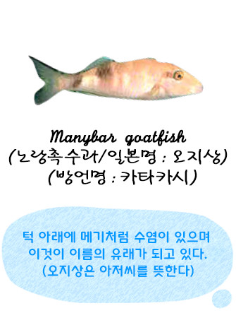
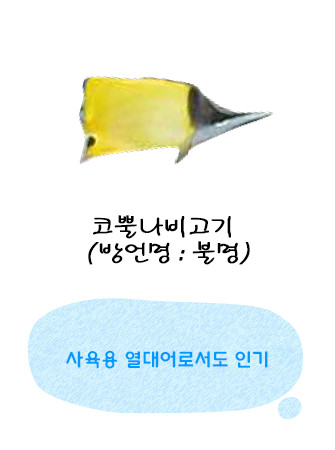
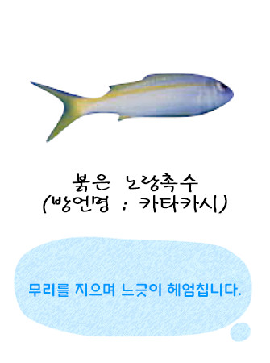
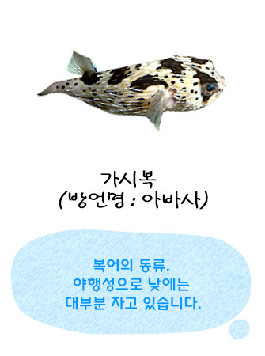
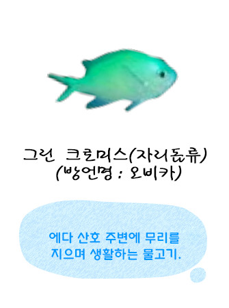

1988年第一代SUBMARINE.Jr在成为万座酒店的新成员起，27年间一直广受顾客的喜爱。
第二代的Submarine Jr.II也将和第一代一起带领游客，乘风出海。


| 名称 | Submarine Jr.II（海中展望船） | 下海日 | 2015年7月7日 |
|---|---|---|---|
| 全长 | 約13.45ｍ | 船宽 | 5.00ｍ |
| 船高 | 2.60ｍ | 重量 | 約17吨 |
| 最多乘员数 | 乘客：44名／船员：2名 | 最大马力 | 128kW×2基 |
| 时速 | 约5海里 | 最大时速 | 9海里 |
※万座海域栖息着各种各样、色彩斑斓的热带鱼。
- 


- 
- 

- 

- 
担任船长2年。带您前往鱼群繁多的海域。
担任船长15年。乘船后顾客的笑脸是工作的动力之源。
担任船长2年。让每位乘船的顾客都高兴而来、满意而归。
担任船长20年。让每位乘船的顾客都能领略到万座海域的美丽。
担任船长5年。带您走进神秘的海底世界。
船员杉浦麻友，向您介绍万座海域的小知识。
船员武重綾，带您认识各种各样的热带鱼。
船员翁長良弥，每位乘客的笑脸，都是工作的成功表现。
船员安井智美，带您体验给热带鱼喂食的快乐。
船员日暮優介，带您观赏不同时间、不同天气下的美丽热带鱼。
Copyright© ANA INTERCONTINENTAL Manza Beach Resort. All rights reserved.